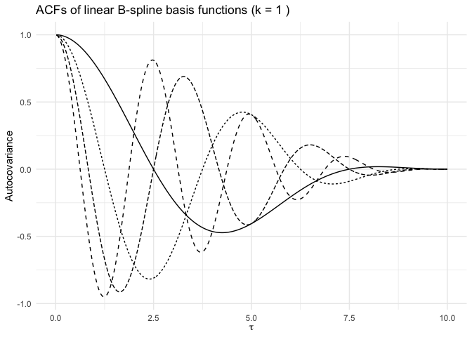

This package provides flexible auto-covariance kernel construction via inverse Fourier transforms of B-spline bases, as well as some handy tools for optimisation. Please note, if you have found yourself in the GitHub repo, please navigate here for the pkgdown page.
Installation
You can install the development version of bskernel from GitHub with
devtools::install_github("astfalckl/bskernel")Quickstart
The bskernel package provides tools for constructing auto-covariance functions via the inverse Fourier transform of B-spline basis functions on the spectral domain. The workhorse functions are
build_bspline_design_matrixreconstruct_acf
Below is a minimal example that recreates Figure 1 of the paper.
library(bskernel)
k <- 1
knots <- seq(-0.125, 0.5, 0.125)
omega <- seq(0, 0.5, length.out = 100)
tau <- seq(0, 7.5, length = 100)
spline_bases <- build_bspline_design_matrix(omega, knots, k)
acfs <- sapply(1:4, function(i){
idx <- rep(0, 4)
idx[i] <- 1
Re(reconstruct_acf(idx, knots, k, tau))
})Note that reconstruct_acf() is designed to summate over a bases expansion, here we iteratively select the basis member. The spline and acf bases are plotted below (plotting code is suppressed, see .Rmd file).

Articles
I have written a number of tutorials:
Citation
This package accompanies the paper
LC Astfalck. (2025). ‘’Universal modelling of auto-covariance functions via spline kernels’’. Submitted to the Journal of the Royal Statistical Society: Series B. [Available here.]